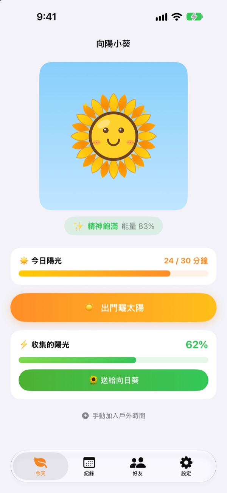
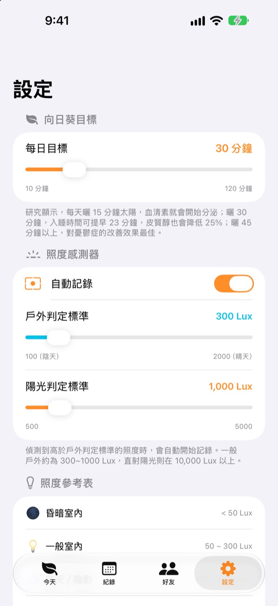
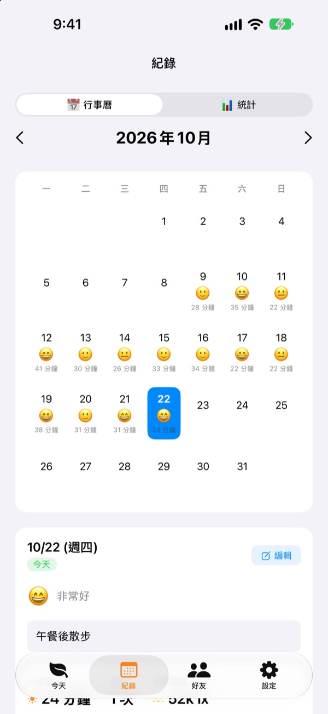
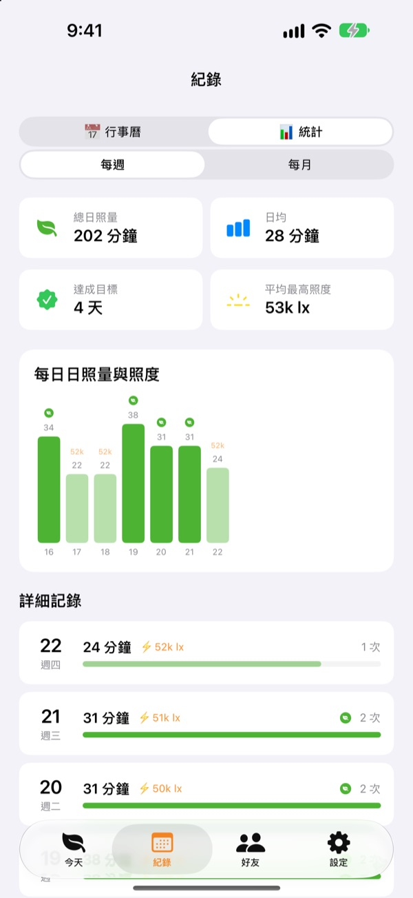

用今天曬到的陽光，
養一株向日葵
出門就會自動累積曬太陽的時間。把收集的陽光送給向日葵，它就精神飽滿；幾天沒照顧，它就會慢慢枯萎。
所有功能免費，紀錄只存在裝置裡。

動手收集陽光
選好亮度和時間，曬一下太陽，再把陽光送給快枯萎的向日葵。
今天你曬了幾分鐘太陽？
上班路上走幾步，中午出門買個便當。整天待在室內，常常到晚上才發現幾乎沒照到太陽。向陽小葵把你在戶外的時間變成清楚的數字，向日葵也等著你明天再出門。
一出門就自動測量
點一下 出門曬太陽 再走出去，App 會用前鏡頭的曝光資訊測量周圍亮度。像戶外一樣亮的光線持續約 30 秒，就開始記錄。不會拍照，也不會儲存照片。
開始記錄後，感測器每 2 分鐘只開 20 秒，盡量省電。

每天記下陽光和心情
在月曆上為每一天留下曬太陽的時間、心情表情符號和一句話。在戶外卻沒測到的時間，可以用 手動加入戶外時間 補上 5 到 120 分鐘。

一週、一個月的變化一眼看懂
週統計和月統計告訴你哪幾天達標、平均曬了多久。每日目標可設定為 10 到 120 分鐘，首頁就能看到今天還差幾分鐘。
主畫面和鎖定畫面小工具、動態島也能看到今天的陽光和向日葵的狀態。

三個步驟就能開始
- 1
設定每日目標
預設 30 分鐘，可在設定裡改成 10 到 120 分鐘。
- 2
出門曬太陽
點
出門曬太陽，開著 App 走到戶外。第一次使用時會詢問一次相機權限。 - 3
送給向日葵
點
送給向日葵，把收集的陽光變成能量。
不同亮度的累積方式
- 低於 300 勒克斯
- 微弱光線：不算曬太陽的時間
- 300～1,000 勒克斯
- 戶外／陰天：每 10 分鐘 1～3%
- 1,000～10,000 勒克斯
- 陽光：每 10 分鐘 3～33%
- 10,000 勒克斯以上
- 強烈陽光：每 10 分鐘超過 33%
- 收集的陽光
- 分鐘數 × 平均亮度 ÷ 3,000（每次最多 100%）
- 向日葵能量
- 每小時減少 2.5%，一天大約 60%
戶外判定標準可在設定中調整為 100～2,000 勒克斯，預設是 300 勒克斯。
常見問題
陽光是怎麼測量的？
App 透過前鏡頭的曝光資訊推估周圍亮度（照度）。像戶外一樣亮的光線持續一小段時間，就會自動開始記錄。不會拍照，也不會儲存照片。
測量時會很耗電嗎？
確認是陽光後，感測器不會一直開著，而是每 2 分鐘開 20 秒左右重新測量，其餘時間只用計時器記錄，盡量省電。
向日葵一直枯萎。
向日葵每小時會失去 2.5% 的能量。收集陽光後，請點 送給向日葵。晴天在直射陽光下曬 15～20 分鐘，就能補回一天減少的能量。
我在戶外，卻沒有記錄到。
可以在首頁下方點 手動加入戶外時間，補上 5 到 120 分鐘。陰天不容易開始記錄時，可以在設定裡調低戶外判定標準。
朋友功能怎麼用？
和朋友靠得很近（約 10 公尺內）且兩人都在測量陽光時，會自動連線。第一次遇到的人要先確認「一起曬」，之後就會自動連線。一起曬太陽時花瓣會染上繽紛的顏色，並在 3 天內慢慢褪回原色，朋友分頁也會留下你們一起曬的紀錄。兩人都要安裝 App，並允許藍牙和區域網路權限。
真的免費嗎？
是的。沒有廣告也沒有付費項目，所有功能都能用。喜歡的話可以在 App 裡贊助小費，但贊助不會開啟額外功能。
紀錄可以備份或轉移嗎？
紀錄不經過伺服器，只存在裝置裡，會保留最近 90 天。沒有另外的備份功能，但會包含在 iCloud 或電腦上的 iPhone 備份中。
我想刪除所有紀錄。
在 App 的設定裡點 重設資料，或直接刪除 App，所有紀錄都會消失，而且無法復原。
遇到問題要向哪裡回報？
請寄信到下方信箱，或到 GitHub 提出 Issue（github.com/M1zz/SunlightTracker/issues）。附上機型、iOS 版本和發生問題時的狀況，會很有幫助。通常幾天內會回覆。
有任何問題或建議，請寄信到 leeo@kakao.com。